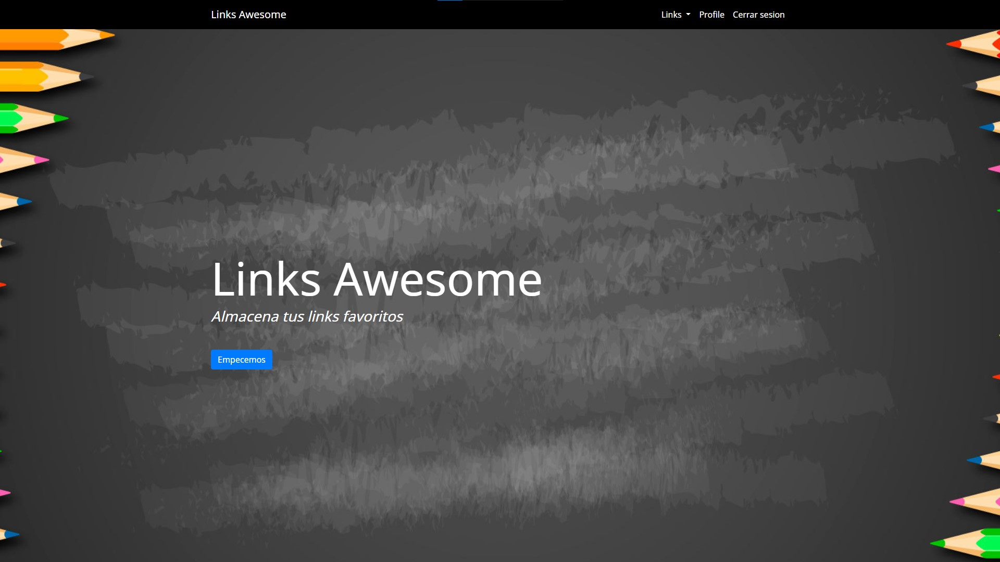

Links awesome
Links awesome es una aplicación para guardar tus paginas favoritas estas son linkeadas con un perfil el cual debe crearse o si ya está creado loguearse, los links pueden crearse editarse y eliminarse.
Dependencias: bcryptjs para encriptar las contraseñas,
connect-flash para mostrar mensajes al usuario en forma de feedback,
timeago para mostrar cuando fue que se creo ese link,
también se utilizó el framework Express.js.